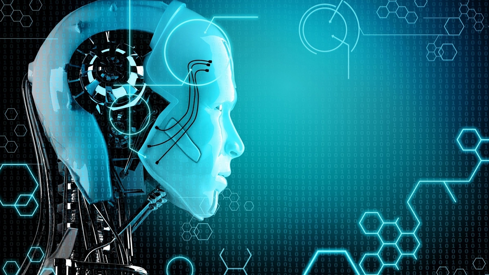

Advantages of Artificial intelligence
1. 24/7 Availability
Machines don’t require frequent breaks and refreshments like human beings. That can be modified to work for long hours and can able to perform the work persistently without getting bored or distracted or even tired. Using machines, we are able to expect the same kind of results irrespective of timings, season and etc., those we can’t anticipate from human beings

2. Digital Assistance
Highly advanced organizations already implemented machines on behalf of humans to interact with their customers by using ‘avatars’. It is the digital assistants or replicas which will help to reduce the need for human resources.
For AI Machines, emotions only can be identified in the way of rational thinking.
Robots can’t identify the sentimental factor of the user. It actually programmed for only think logically and take the right program decisions based on the existing experience taught to the machine.
Emotions can’t be identifying by the machines that may be dissatisfying the customer. In that case, we need human intervention. This lagging tries to rule out for machine intelligence. But still, it helps in other aspects.
Links: